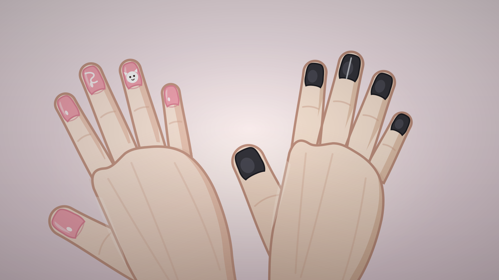

每一格左边是游戏内实际裁切（1600×900 视口 + preserveAspectRatio="xMidYMid slice"，即玩家看到的样子），
右边是原始 720×1080 画布全貌。改动 src/art.js handSVG() 后刷新本页即可复核。
可用 ?only=<kind> 只看一种。
左手 / 右手 = 画面左 / 画面右（金是第一人称视角，低头看自己的两只手）。
同一场景切换选项时手型·构图·手指角度完全一致，只有甲油与图案变。
美甲的双手图都是"金低头看自己的两只手"⇒ 两只手同一套肤色；只有 hold（他和她两个人的手相握）是两种肤色。
cg_nail_art · 1600×900 原尺寸（c8_92 用）
